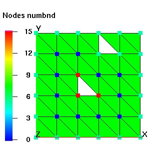

BOUNDARY_COMPONENTSFORMAT:Calculate the number of connected components of a mesh. This is useful for looking for holes in a mesh or as a diagnostic when looking at a single material (itetclr, imt) and determining if the material is contiguous or broken into multiple pieces.
When the node option is invoked, the boundary_components module adds the node attribute numbnd and id_numb to the current mesh object to which is written the node number of a representative node of each outside boundary component. In this mode 'connected' means that a set of nodes of type 'outside' (itp = 10 or 12) can be traversed via element edges that have both vertices of type 'outside'. This method is not really fool proof in detecting holes in a mesh since one can traverse from the exterior of a mesh to an interior hole in the mesh via an edge that is not really a boundary edge. More coding could deal with this situation. In addition, the number of connected boundary components and a representative node number from each boundary component is assigned to the numbnd array. The number of nodes in each boundary set is printed. Non-boundary nodes are assigned numbnd = 0. If the itp array is not current, it must be updated first, with the command resetpts/itp. By default resetpts/itp is called when the node option is invoked so the reset/noreset is optional. The node array id_numb is similar to numbnd in that nodes associate with the same boundary component have the same integer value, however id_numb is assigned values starting with 1 and going up to the number of boundary components in sequential order.
When the node / material_id_number option is invoked, the distinction of boundary nodes as defined by itp array value is ignored. Instead, all nodes with imt = material_id_number are examined and the number of edge connected components is determined for just that material. Nodes with imt ¹ material_id_number are assigned numbnd = 0.
When the element option is invoked, the element attribute numbnd_e is added to the current mesh object. The number of connected components of the mesh is computed where 'connected' means sets of elements can be traversed via the element faces. The attribute numbnd_e is filled with the element number of a representitive element of a connected set. In addition, the number of connected components and a representative element number from each connected component and the number of elements in each connected component set is printed. When the material_id_number option is invoked, only elements with itetclr = material_id_number are examined. Elements with itetclr ¹ material_id_number are assigned numbnd_e = 0.
boundary_components- (this syntax is the same as boundary_components / node)boundary_components / node / [reset|noreset]
boundary_components / node / material_id_number / [reset|noreset]
boundary_components / element / [reset|noreset]boundary_components / element / material_id_number / [reset|noreset]EXAMPLE:boundary_components
boundary_components / element / 3
|  |
|
| boundary_components / node - note that the interior nodes have numbnd=0 and the nodes of the upper hole have the same value as the outside boundary since the upper hole can be reached by traversing an edge that is connected to the exterior. | boundary_components / element - note that the two pieces are have different values for numbnd_e even though element 15 is touching element 6. This is because one cannot traverse from the blue mesh (numbnd_e = 15) to the red mesh (numbnd_e = 24) through faces of the mesh. |